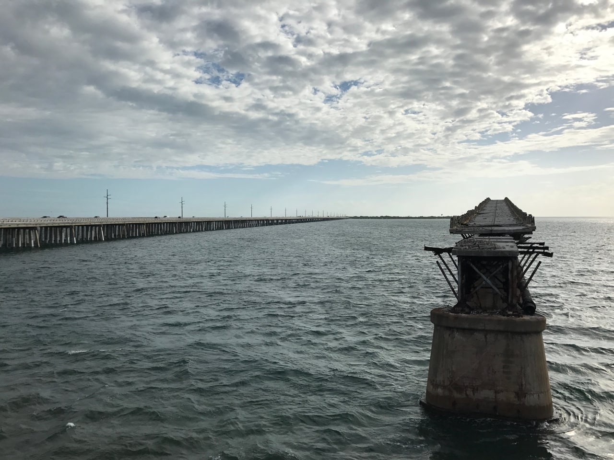

Day 36: Marathon — Sugarloaf Key
Oct 14, 2016 • 28.4 miles
Let me first pat myself on the back. Today began with the Seven Mile Bridge, on the shoulder of US 1, and I practically flew over it! I didn’t walk once, even on the incline and decline in the middle, and I only stopped once to take photos of Pigeon Key, never to catch my breath or steel my nerves. Adrenaline for sure played a big part in getting me through it.
Then it was a network of trails and shoulder hugging through many of the lower keys. About half the bridges had pedestrian counterparts, which were closed. No matter, I can do the biggest bridge with traffic, so I can certainly do the smaller ones. Watching the old railroad bridge follow me in parallel by Bahia Honda was pretty cool, even if there was no way to get on it myself (though I tried — see photo).
Now my tent is pitched at an oceanside Koa and I’m going to spend the rest of the day at their tiny manmade beach. Key West is tomorrow.